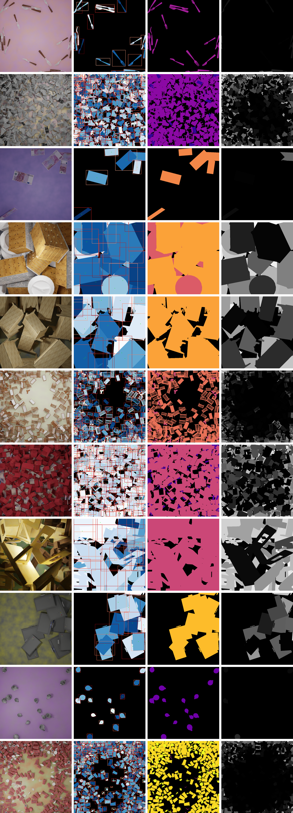

The first column are example images from the training set of the dataset. The following three columns visualise the instance labels, class labels and occlusion percentages per object. The bounding boxes (red) and center points (green) of each object is shown on column 2.
